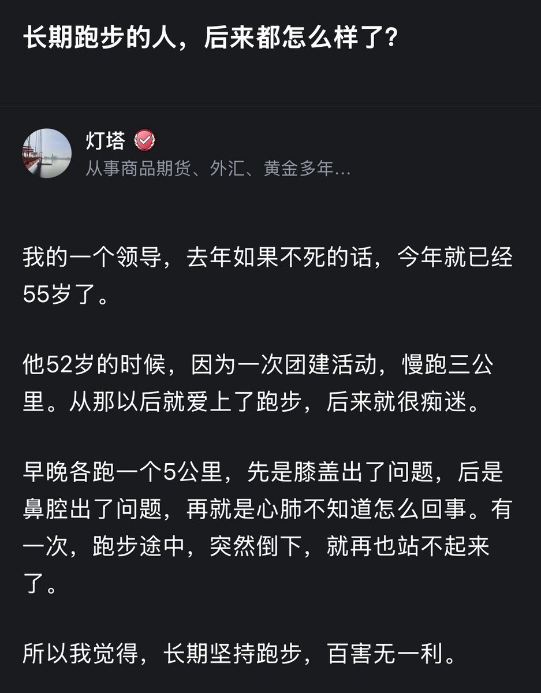

mycbxzd
@axzamyzed
@didengshengwu 不能不动不能多动

低等生物
@didengshengwu
我姥姥从来也不运动，从我记事起 她身体就不好 腿有毛病，每天都特别疼，但即使这样 她也活到了80多岁才走
我奶奶也从来不运动，现在90多岁了 活的好好的 身体不错
大多数运动员老了之后身体并不好，从这一点就能看出 任何运动 都要适度。 https://t.co/slmz27AfCd